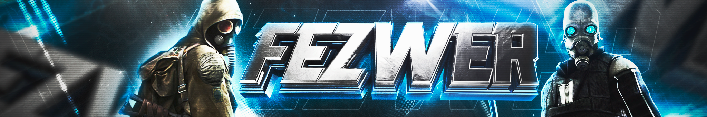

Этот сайт посвящен заметкам о
программировании
в Garry's Mod.
По сути - личный блог с юмором.

Краткое описание игры:
Garry's mod — компьютерная игра, физическая «песочница»,
которая
позволяет игроку манипулировать объектами и экспериментировать с физикой, реализм которой обеспечивается
движком Source.
Данная модификация создавалась для демонстрации обширных возможностей движка Source, который
ограничивает свободу игроков только их собственной фантазией и воображением.
Аддоны, созданные мною
| Созданы |
Аддон выводящий в левом верхнем углу кол-во предметов собранных при фарме |
| Аддон, ренализующий псевдорандомную телепортацию |
| Аддон для обмена материалов в соотношении 2 к 1 |
| Backend часть времени(игровое время на сервере) |
| В разработке |
Система обмена игровыми предметами |